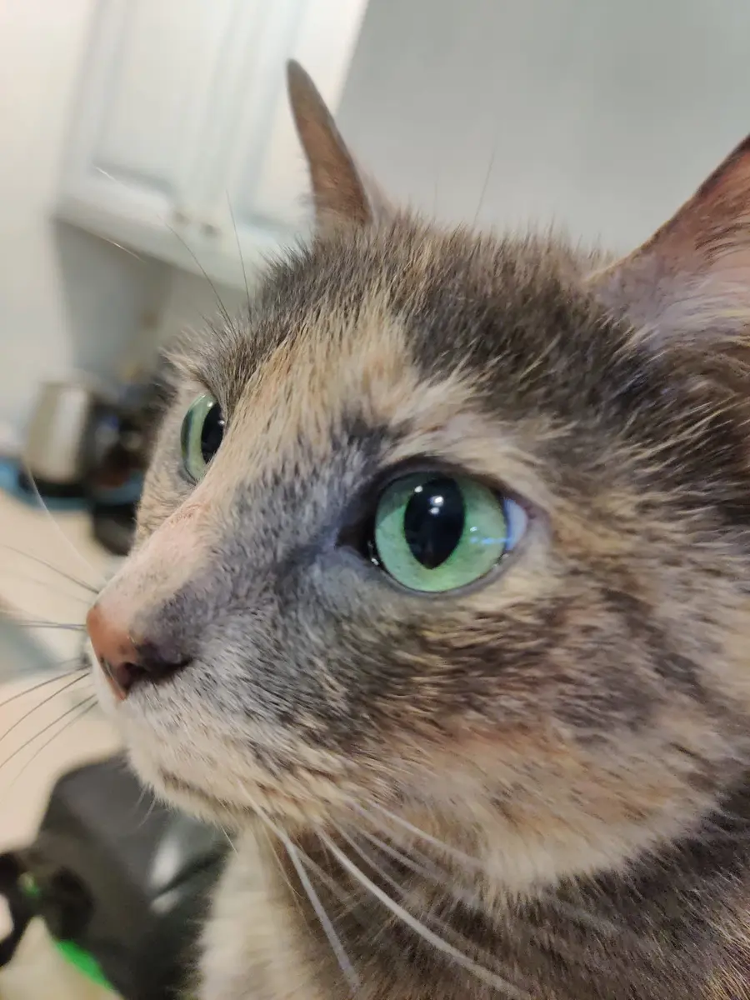
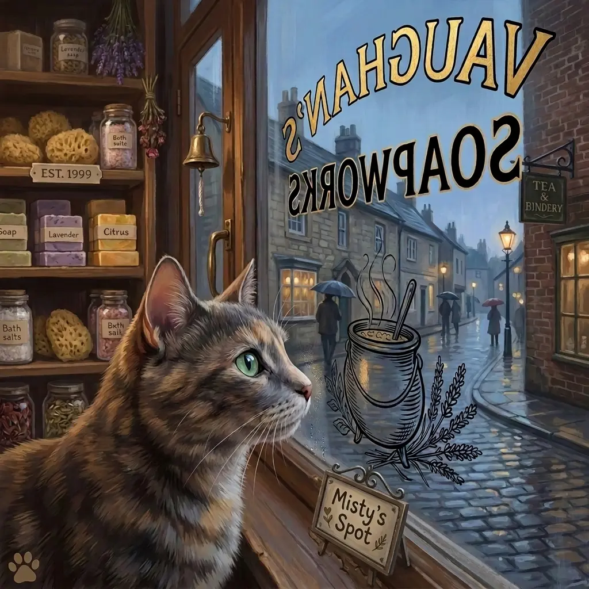

Behind the mysteries
About Taryn Woods
Cozy mysteries, rescued cats, handmade soap, long walks, and enough clean romance that Taryn would never be embarrassed if her mother read her books.
Taryn writes cozy mysteries with a talking cat, Misty, and keeps them clean—writing enough romance that she would not be embarrassed if her mother read her books!
The Pacific Northwest is where Taryn is from, but she calls Central Louisiana home. She spends her time writing and going for long walks, since that is where she gets most of her story inspiration. How can anyone not be roused by live oak trees, magnolias, rice fields, crawfish farming, and everything the heat and humidity bring? Besides the mosquitoes, of course.
Taryn loves her husband of twenty-five-plus years, five rescued cats, writing stories, watching movies, making soap and other handmade bath-and-body products, and cooking—especially soups and biscuits.
She is perfectly happy staying in her pajamas all day, curling up with the real-life Misty, and reading, because the best part of writing a book is reading one!
Follow Taryn on Amazon
The cat behind the familiar
Meet the real Misty
Misty is not simply a mascot for The Soapworks Mysteries. Taryn’s real-life tortoiseshell inspired Elaine Bellamy’s magical familiar: green-eyed, beautiful, selective with her sweetness, and equipped with plenty of tortitude.
The fictional Misty can talk. The real Misty has never needed words to make her opinions perfectly clear.
Misty at work
Inside the world of the Soapworks


